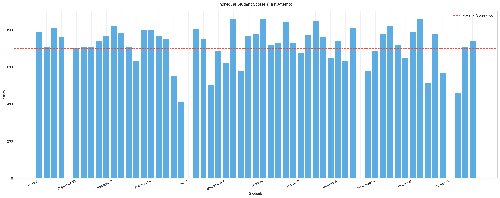
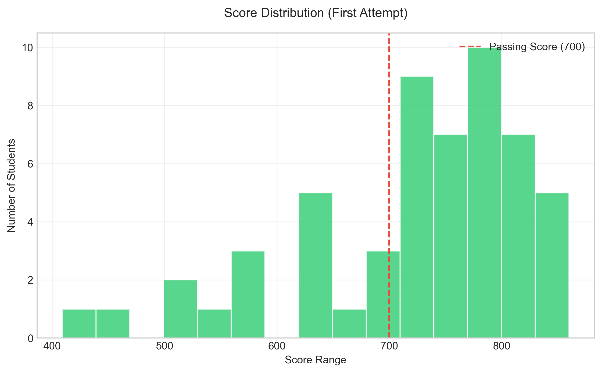
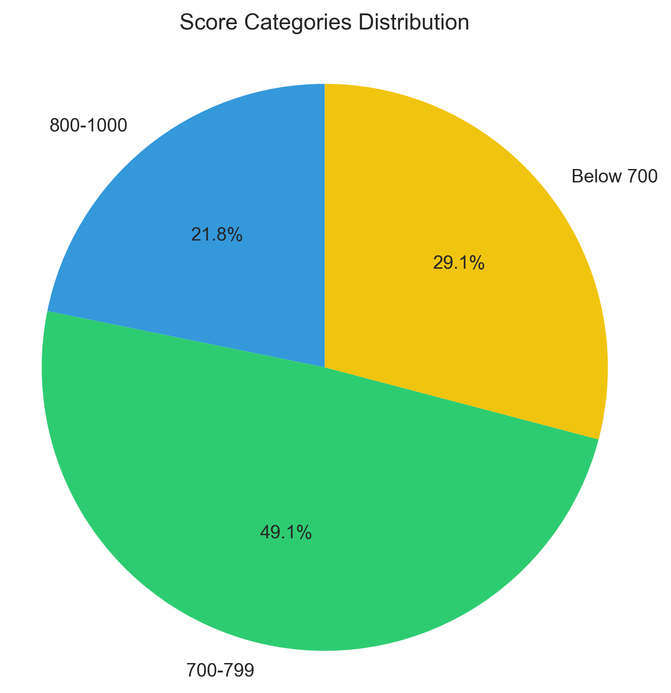
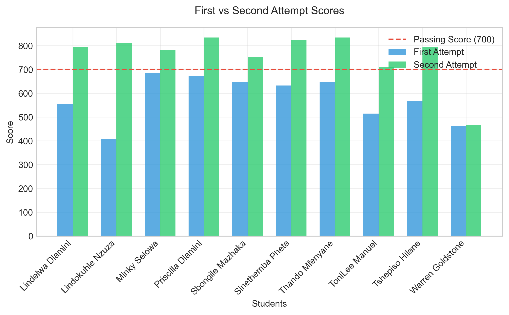

Performance Analysis of 92 Students
Performance of 92 students who took the PCAP™ – Certified Associate Python Programmer Exam. The exam requires a minimum score of 70% to pass. Some students who failed their first attempt retook the exam, but two students did not retake after failing, and three students failed their second attempt.
92
94.6%
78.36
70%




Standard Deviation (First Attempt): 11.37
The students demonstrated a strong overall performance in the PCAP™ exam, achieving a 94.6% final pass rate. While most students succeeded on their first attempt, and 75% of retake students passed on their second try, focused support is needed for the 5 students who didn't achieve certification. Targeted interventions and encouragement for retakes can help improve future outcomes.